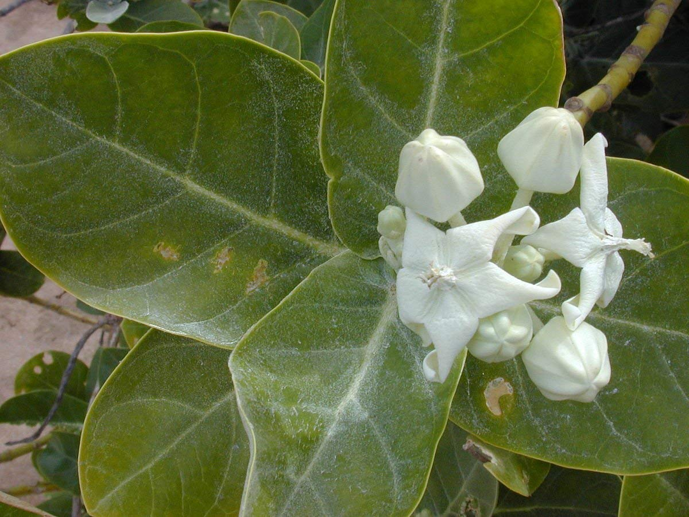
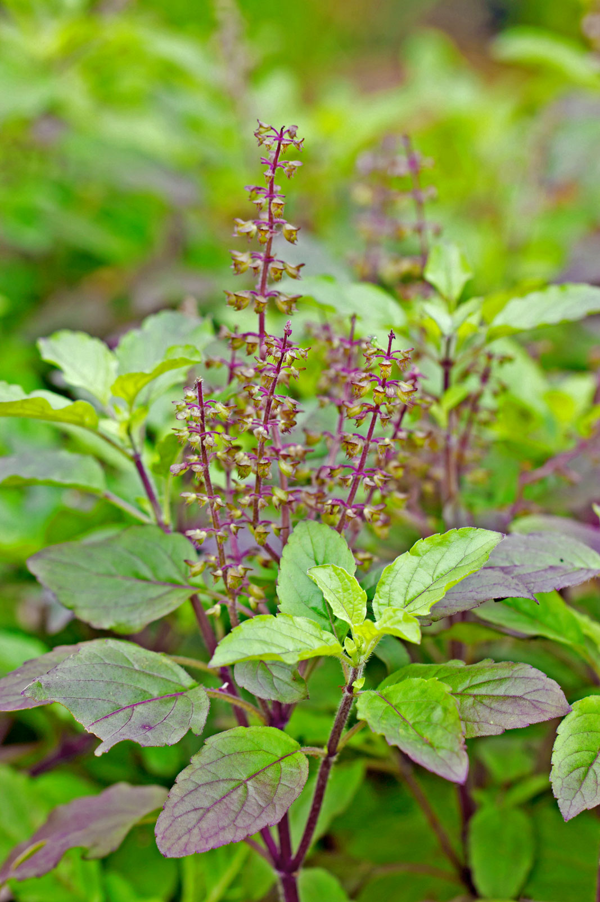

Home remedies you can use to cure diabetes
Papaya Leaves
Papaya leaves are often used in Mexican folk medicine as a natural therapy for treating diabetes and improving blood sugar control. Studies in mice have found papaya leaves to have potent antioxidant and blood sugar-lowering effects. Papaya leaf juice can be beneficial in boosting immunity too.
Bitter Gourd Leaves
This vegetable is synonymous with Diabetes as it is said to contain charanthin, a chemical that helps in lowering blood glucose levels. On regular consumption, the bitter gourd increases the secretion of insulin to combat the imbalances caused. Just boil some leaves of bitter gourd, and allow it to boil over medium flames for 10 minutes. After that, strain the tea and it's ready.
Olive Leaves
The antioxidants in olive leaves can lower your blood sugar and help stabilize it to maintain healthy levels. Researchers find that this effect helps treat people with diabetes and may prevent you from developing the disease. Studies also show that olive leaf extract can reduce your body's insulin resistance, one of the biggest risk factors for diabetes. Soak these leaves in the water and drink them in the morning or make tea.
Curry Leaves
Curry leaves are said to be rich in fiber content. These leaves contain a special kind of fiber that plays a significant role in lowering blood sugar levels. Curry leaves are said to help in the adequate release of insulin in the body and reduce blood sugar levels. For those who are diabetic, curry leaves are the ideal natural medicine.Consuming fresh curry leaves on an empty stomach can keep diabetes at bay.
Bay Leaves
Bay leaves or tej patta reduces total cholesterol and glucose levels in people with type 2 diabetes. Studies performed on diabetic patients showed a 30 % decrease in blood sugar levels after 30 days. This study demonstrates that consumption of bay leaves, 2g per day for 30 days decreases risk factors for diabetes and cardiovascular diseases.
Neem Leaves
Leaves of this valuable plant have an abundance of flavonoids, glycosides, and antiviral compounds. Studies find that neem is able to curb diabetes in non-insulin depends on diabetic patients too. It is a highly recommended herb that can definitely provide relief from the problem of blood sugar spikes. You can either chew the leaves or drink them with water and other juices you prefer for your diabetes routine.
Mango Leaves
Cannot imagine drinking tea with fresh mango leaves? Think again! It can do wonders for people with diabetes. Boil 15 mango leaves for 15 minutes, strain it and drink this concoction on an empty stomach. If one drinks this even once a day, it can help balance sugars in the bloodstream.
Aak Leaves
Find out an aak plant in your area and pluck two complete leaves. Be careful while plucking because white color liquid coming out is very harmful to the eyes. Wash the leaves. Put one aak leaf on the sole of your foot, face the rough part of the leaf towards the sole. Put on the socks and keep the aak leaf covered with socks for the whole day. Do the same thing with the other foot. Remove the aak leaf in the night and wash your feet, continue it for the next 40 days. Doing this will bring your blood sugar levels to normal.
Stevia Leaves
Dried stevia leaf powder significantly lowers blood sugar levels in people with diabetes, both while fasting and after eating. Stevia is safe for people with diabetes to use as a substitute for sugar and other sweeteners. Diabetics can drink tea of stevia leaves for lowering their blood sugar levels. However, people with already lower blood sugar levels should not drink this tea. These are the leaves that are helpful in treating diabetes. You can use these home remedies for diabetes at home and see the result yourself.
Indian Gooseberries (Amla)
Gooseberries contain bioactive components which helps regulating blood sugar levels and helps pancreas secrete insulin.Drinking juice of gooseberries can help reduce diabetes. Take 2-3 deseeded Indian gooseberries Crush it to make a paste Now with the help of muslin cloth extract it's juice take a glass of water, add the juice to it and mix it will drink this daily on an empty stomach
Indian BlackBerry(Jamun)
Consume one teaspoon of powdered Indian BlackBerry seeds with water twice the day as it contains anthocyanins, lagic acid, hydrolyseable and tanins which help in regulating the blood sugar level.
Guava leaves
If you want to get the benefits of guava leaves in improving diabetes, you should make the guava leaves tea. Put some guava leaves in a pan Pour 1 1/2 cups of fresh water over the leaves Boil it for a couple of minutes until the water is reduced to half Turn off the heat and strain it Let this tea cool down to the room temperature Drink it Consume two or three cups of this tea per day for quick results.
Cherries
Cherries are one of the best home remedies for diabetes because it is loaded with beta-carotene, antioxidants, potassium, vitamin C, iron, magnesium, folate, and fiber. Moreover, the anthocyanins present in cherries can boost insulin production by up to 50 percent, which lowers blood pressure and improves diabetes. Eating cherries can help to prevent cancer, heart disease, and other health problems that are often found in patients with diabetes mellitus. For this treatment, you just need to eat a one-half cup of cherries per day. Cherries can be consumed fresh, frozen, canned, or dried.

Pears
Pears are packed with vitamin A, C, B1, B2, E, and fiber. Eating pears can help to control blood sugar levels, improve the immune system, reduce cholesterol, and improve digestive health.
Bael
All parts of bael tree including root, bark, leaves, and fruit contains medicinal properties. Many studies showed that the bael leaves can reduce blood sugar by up to 54%. The bael leaves are often used in powdered form that contains anti-diabetic properties. These properties make bael become a highly recommended herb for diabetes.Diabetic patients should drink 20 ml of bael juice extracted from bael leaves to manage diabetes. Alternatively, bael leaves can be grounded and then taken with your empty stomach every morning for a period of 7 days.
Fenugreek seeds
Fenugreek is considered among one of the most effective home remedies for diabetes mellitus. This fenugreek helps to stimulate your cells in pancreas gland and thereby increases insulin production. Fenugreek seeds are storehouses of soluble fiber, which may help manage blood sugar levels. According to many studies, fenugreek may effectively reduce blood sugar in diabetics. Along with that, it may reduce fasting glucose while improving glucose tolerance. Take a bowl and place the fenugreek seeds in it. Add water to it and soak it for an entire night. In the next morning, you crush the seeds and strain it to get the water. Drink this water to get instant relief from diabetes.
Leaves paste
- Basil leaves - 5
- Neem leaves - 5
- Bael leaves - 5
Basil leaves
Holy basil (or Tulsi) contains multiple health beneficial properties. Its leaves are very useful in reducing your blood glucose levels.
Flaxseeds
Using flaxseeds are one of the greatest home remedies for diabetes you should know. Flaxseed contains a rich amount of protein, fiber, and plant compounds called lignans, which will function as antioxidants. In addition, they can stabilize blood sugar levels. Therefore, people with low blood sugar levels should include these seeds in their diet.Take the warm milk or water and add the flaxseed powder to this. Else,you can include flaxseed powder to the gravies and soups and take this in the daily diet

Almonds
Have a handful every day. They contain good fats that lower insulin resistance. It is by reducing inflammation in your body's tissues. These are including those in your brain cells which regulate the metabolism of sugars (glucose). Eating almonds regularly would help control glucose levels. These are better than other nuts such as cashews or walnuts.
Peanut butter
Peanut butter. After you've experienced an episode of low blood sugar and corrected it, follow up with a protein and carbohydrate snack. Peanut butter on a couple of crackers supplies both, and it's easy to fix when you may still feel a little jittery. Just avoid brands that contain added sugar, glucose, or jelly.